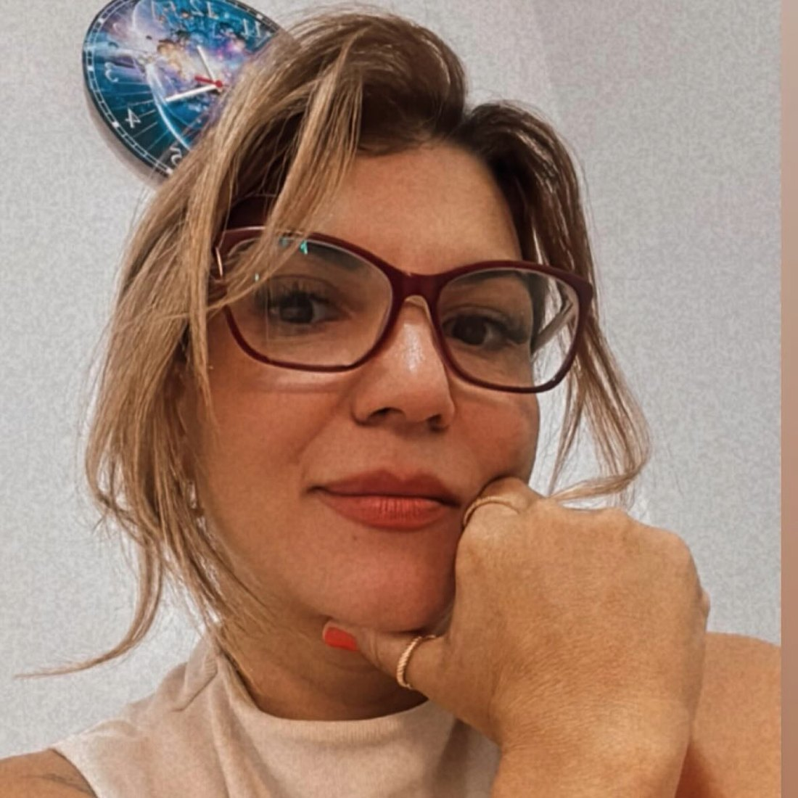
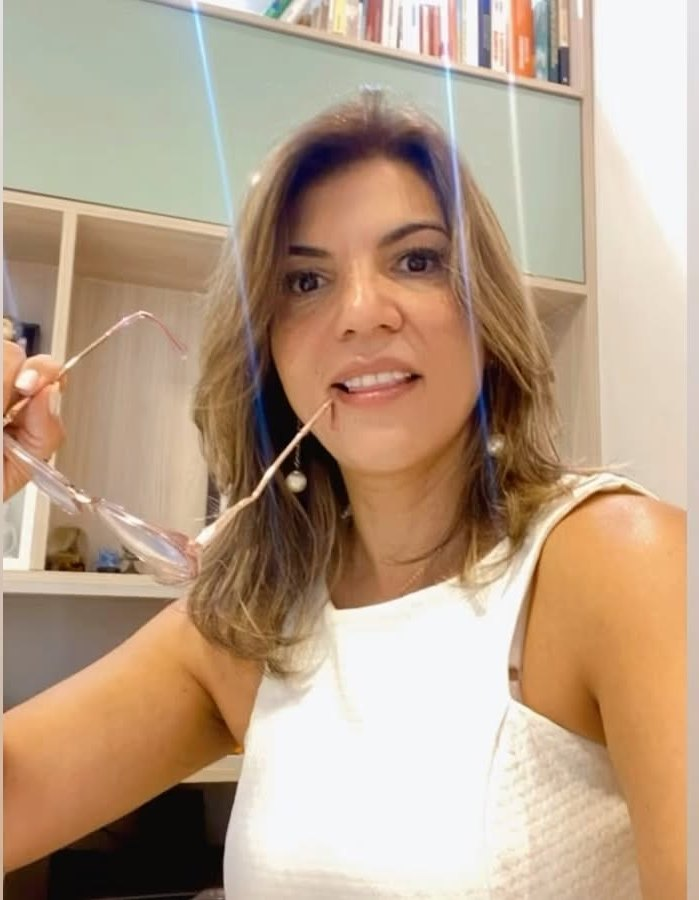
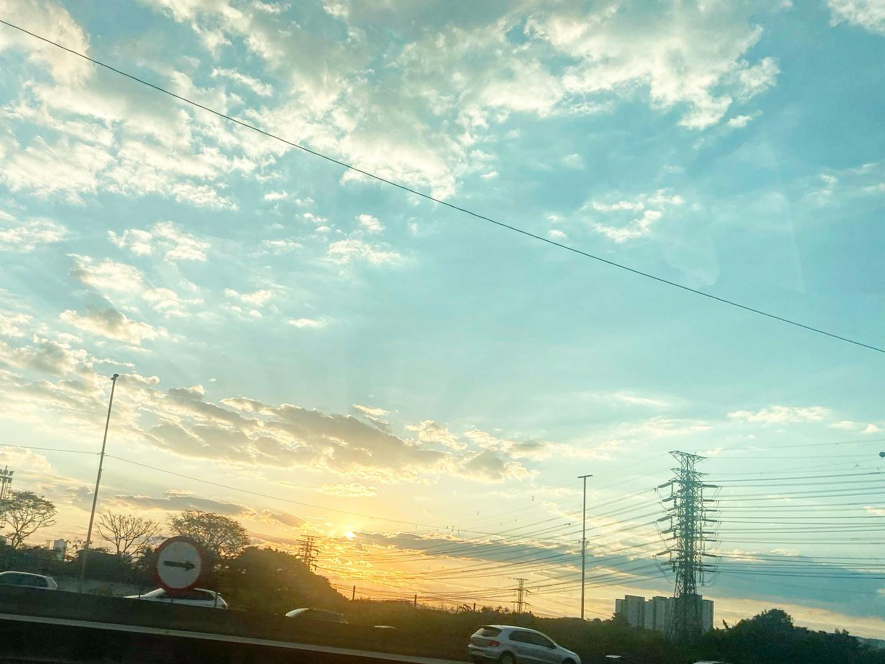
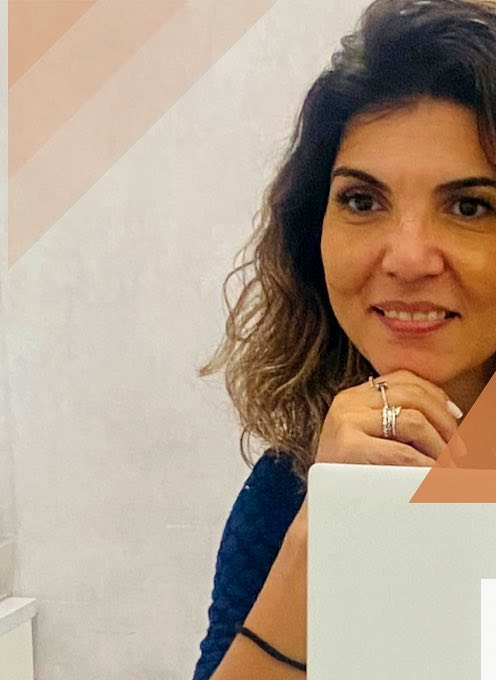
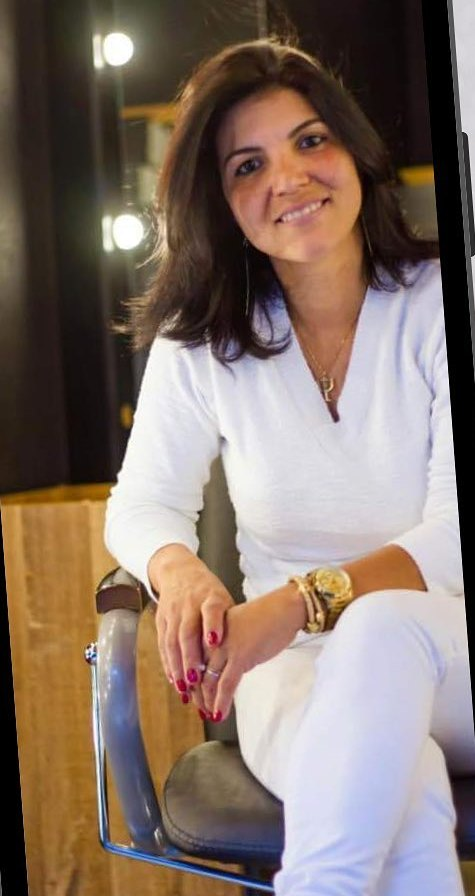
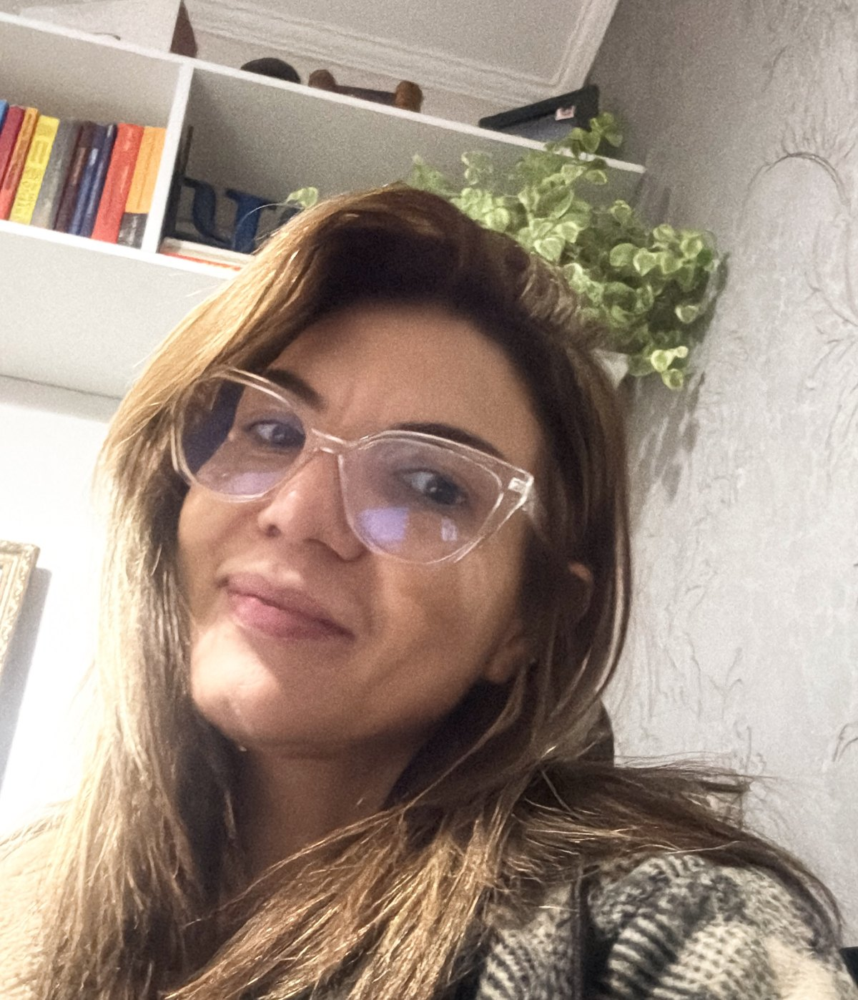
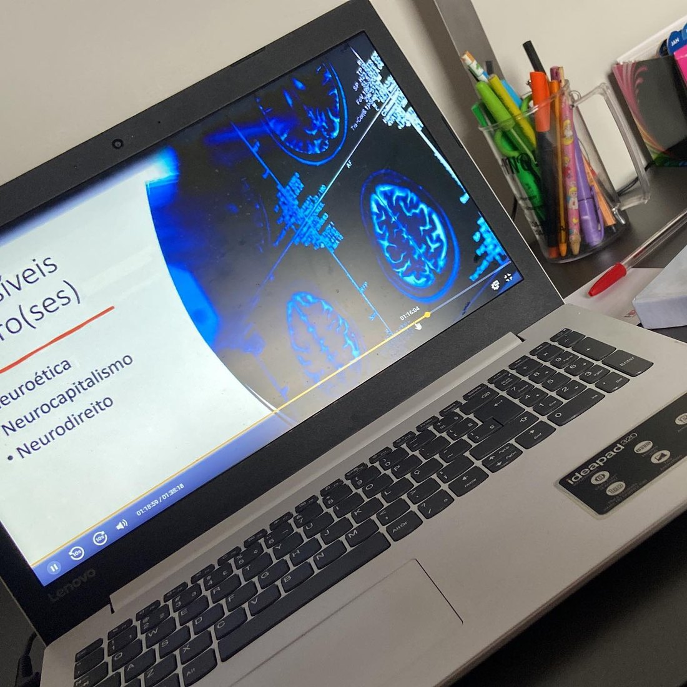
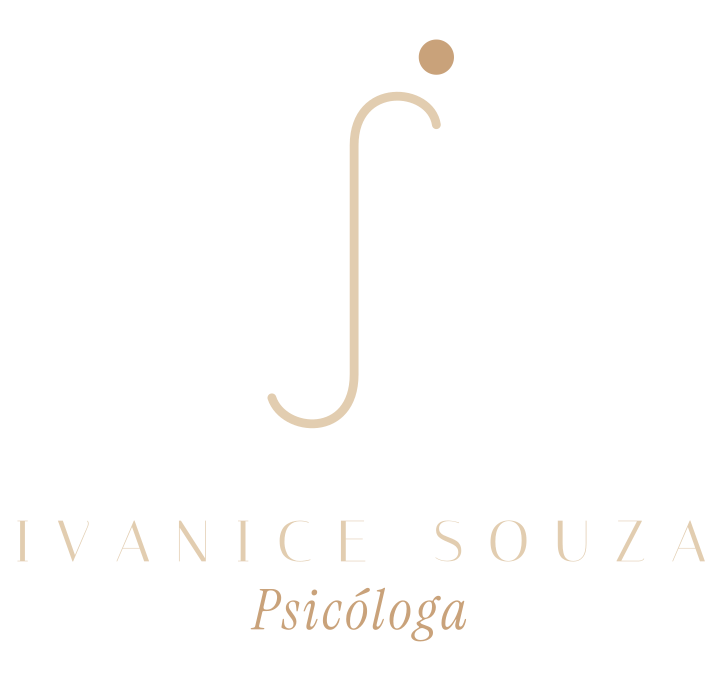

Aqui
Terapia online para brasileiros na Europa. Presencial em Guarulhos.

Sessão online · TCCSentimento → pensamento → comportamento



Não é nem mudar o pensamento: é a pessoa entender o que está trazendo sofrimento.
Identifico o sentimento que a pessoa tem.
São distorções.
Com esse registro, a gente consegue ir identificando o que é que deixa a pessoa tão ansiosa.
Gradativamente, com o passar do tempo.
arraste ↔



“Ser psicóloga é estar presente para ouvir o que muitas vezes não consegue ser dito, acolher sem julgamentos e caminhar ao lado de cada pessoa.”
Para brasileiros na Europa.
Agende sua sessãoGuarulhos.
Agende sua sessão